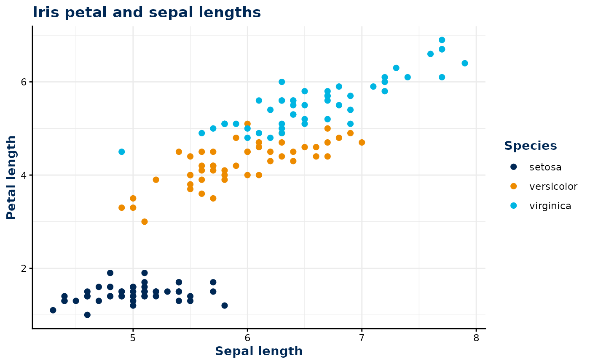
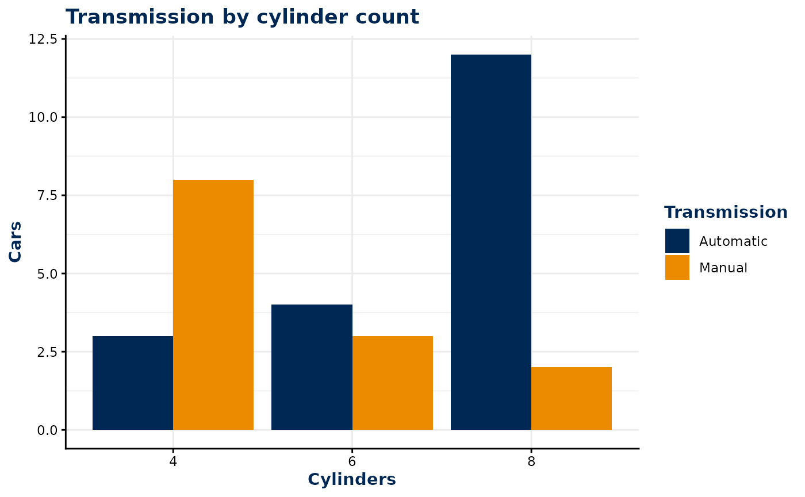
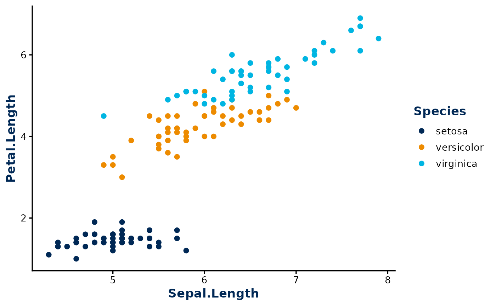

bsu.tools provides themes and scales for applying UC
Davis Health styling to ggplot2 figures and flextable tables.
ggplot2 styling
Add the ggplot2 theme and scales to a plot with +, just
like other ggplot2 components.
Style points with color
Use scale_color_ucdh() when a discrete variable is
mapped to the color aesthetic. theme_ucdh()
styles the plot text, grid, legend, and facet strips.
ggplot(
iris,
aes(Sepal.Length, Petal.Length, color = Species)
) +
geom_point(size = 2) +
labs(
title = "Iris petal and sepal lengths",
x = "Sepal length",
y = "Petal length"
) +
scale_color_ucdh() +
theme_ucdh()
Style areas with fill
Use scale_fill_ucdh() for discrete fill
mappings, such as groups in a bar chart.
ggplot(
mtcars,
aes(factor(cyl), fill = factor(am))
) +
geom_bar(position = "dodge") +
labs(
title = "Transmission by cylinder count",
x = "Cylinders",
y = "Cars"
) +
scale_fill_ucdh(
name = "Transmission",
labels = c("Automatic", "Manual")
) +
theme_ucdh()
Customize the theme
The base_size and base_family arguments
control the text, while grid_lines = FALSE removes the
panel grid. For example:
ggplot(
iris,
aes(Sepal.Length, Petal.Length, color = Species)
) +
geom_point(size = 2) +
scale_color_ucdh() +
theme_ucdh(base_size = 13, grid_lines = FALSE)
flextable styling
Use theme_flextable_ucdh() to style a flextable with a
navy and gold header and navy body text. The first column is also
bolded.
iris |>
dplyr::summarise(
`Sepal Width` = mean(Sepal.Width), `Sepal Length` = mean(Sepal.Length),
`Petal Width` = mean(Petal.Width), `Petal Length` = mean(Petal.Length),
.by = Species
) |>
flextable::flextable() |>
theme_flextable_ucdh()Species |
Sepal Width |
Sepal Length |
Petal Width |
Petal Length |
|---|---|---|---|---|
setosa |
3.428 |
5.006 |
0.246 |
1.462 |
versicolor |
2.770 |
5.936 |
1.326 |
4.260 |
virginica |
2.974 |
6.588 |
2.026 |
5.552 |